お問い合せはこちらから → TEL:025-244-7900

| 商号 | 株式会社アスパック |
|---|---|
| 代表者 | 吉田 克也 |
| 本社所在地 | 〒164-0011 東京都中野区中央5-23-8 新潟管財二号館 TEL.03(3380)7071 FAX.03(3380)7330 |
| 支店 | 新潟支店 〒950-0914 新潟県新潟市紫竹山2-5-40 新潟管財一号館3F TEL.025(244)7900 FAX.025(246)8922 |
| 資本金 | ¥20,000,000 |
| 創立 | 1995年（平成7年）11月 |
| 取引銀行 | 北越銀行/三井住友銀行 |
| 関連会社 | 株式会社NKSコーポレーション |
| 取引一覧 | 株式会社リンレイ ペンギンワックス株式会社 横浜油脂工業株式会社 ユシロ化学工業株式会社 株式会社信徳 ポミー 株式会社ユーホーニイタカ 山崎産業株式会社 株式会社テラモト 有限会社アプソン 株式会社ソニカル 蔵王産業株式会社 アマノ株式会社 株式会社ミヤキ 株式会社TOWA スイショウ油化工業株式会社 鈴木油脂工業株式会社 サンエスエンジニアリング株式会社 |
|---|